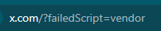

Если есть у кого, настройки, под провайдер интерсвязь, будет вообще замечательно.
Попробуй запустить service_install_russia_blacklist.cmd или service_install_russia_blacklist_dnsredir.cmd
И? что мне это даст?))))
Тупо добавление службы, вместо запуска 1_russia_blacklist_dnsredir.cmd ИЛИ 1_russia_blacklist.cmd не гарантирует что твиттер заработает.
Нужны рабочие настройки, под Твиттер, которые находятся в этих CMD файлах.
Твиттер на многих провайдерах заблокирован по IP. GoodbyeDPI не решит эту проблему самостоятельно, нужно в hosts прописывать не заблокированные IP адреса. Уже обсуждалось тут
ну у меня заработало
Как вариант или как дополнение - мне помогло включение IPv6, без использования hosts или дополнительных настроек. Но провайдер Ростелеком Липецк.
Пробовали шаблоны встроенные менять и тестировать?
Совет, немного, помог, только вот по мимо добавления в хост файл этих адресов
104.244.42.5 t.co
104.244.42.3 twitter.com www.twitter.com
104.244.42.66 api.twitter.com
добавить еще вот эти
104.244.42.3 x.com www.x.com
104.244.42.66 api.x.com
после все заработало.
А, вообще, можно, просто, добавить эти адреса twitter в russia-blacklist.txt, или в новый, к примеру twitter-blacklist.txt, и добавить в CMD файл --blacklist …\russia-twitter.txt
104.244.42.5, 104.244.42.3, 104.244.42.66
start “” goodbyedpi.exe -9 --auto-ttl --allow-no-sni --frag-by-sni --max-payload 2400 --blacklist …\russia-blacklist.txt --blacklist …\russia-youtube.txt --blacklist …\russia-twitter.txt
чтобы не исчезли при обновлении файла russia-blacklist.txt
Ну IPv6 не у всех провайдеров есть. Но подтверждаю, я таким же образом Instagram вернул к жизни.
Что x.com, что twitter.com это фактически один сервер, можно просто было дописать к ним же. В hosts одна запись может держать 9 доменов
Либо сделать отдельный файл со своими доменами и дописать в скрипте обновления добавление доменов из своего файла к russia-blacklist.txt. Когда-то я таким путём пошёл.
Если провайдер заблокировал все ip твиттера вида 104.244.42.* то “простые” пути решения вопроса доступа типа редактирования hosts уже не помогут?
Не помогут, т.к. вы выписываете в хост IP адреса которые заблокировал провайдер.
Попробуйте через разные страны, по VPN, пинговать twitter, IP будут разными, запишите эти IP и проверьте их работоспособность без VPN.
- Заходим на https://dns.google/
- Нам нужны IP-адреса разных стран. Используем DNS lookup через Google на популярные домены за рубежом:
bbc.co.uk, quora.com, naver.com, foxnews.com, rakuten.co.jp, verizon.com, и т.п. - Выполняем lookup
x.com, используя IP-адреса этих сайтов как EDNS Client Subnet, повторяем для каждого домена/адреса - Полученные IP-адреса, при запущенном GoodbyeDPI, проверяем на работоспособность:
curl -v --connect-to ::ip-адрес-x-com-здесь https://x.com - Если сайт ответил по этому IP-адресу — добавляем его в hosts
Альтернативный вариант:
- Скачиваем nmap
- Идём на bgp.he.net за диапазонами Twitter AS: AS13414 Twitter Inc. - bgp.he.net
- Запускаем сканирование какого-то смежного диапазона, в надежде, что он тоже настроен на приём входящих подключений:
nmap -n -T5 -p443 --open 104.244.41.0/24 - Вручную проверям работоспособность IP-адресов:
curl -v --connect-to ::ip-адрес-x-com-здесь https://x.com
Офигеть, сработало, но правда для instagram: для него не очень сложно оказалось найти незаблокированные ip. Чего не сказать о twitter: проверил nmap все диапазоны похожие на 104.244.. и ни одного открытого порта 443. Либо что-то делал не так, либо какая-то суперблокировка именно на твиттер.
Большое спасибо тебе за такой подробный ответ! С роскомпозором скоро вся страна будет шарить в сетевых технологиях
Актуально. После сегодняшнего выпада РКН (и вынужденного перехода на другие параметры запуска goodbyedpi) Хвиттер стал работать кое-как. Или видео не грузится совсем, или картинки очень медленно, иногда и то и другое разом, очень редко и недолго всё грузится нормально. Разные параметры перепробовал, итог один. Может, кто-то смог подобрать нужные параметры запуска?
Пока придумали только так
Либо аналогично, с созданием 2-х служб
действительно, получилось. Сделал отдельные cmd для разных фильтров, и копию экзешника. Теперь висит два процесса, на goodbyedpi.exe крутится russia-blacklist.txt с параметром -9, а на goodbyedpi1.exe russia-youtube.txt с параметрами -7 -q, всё работает хорошо
Тут добрые люди подсказали, как вернуть функционал -9 программе - посмотрите в теме по ссылке выше. Правда, когда это снова забанят - мне неизвестно. Так что может стоит оставить все как есть…
пожалуй да, пока пусть будет как есть, но спасибо, учтём
Доброго времени суток, а вы не сможете подробнее расписать как вы решили проблему? А то у меня никак не выходит, буду премного благодарен.
Какую проблему? Если с работоспособностью Х + ютуб - то нет уже никакой проблемы. Скачайте последнюю версию GDPI и читайте тут
Кстати, все нужное уже в 1_russia_blacklist_YOUTUBE.cmd в новой версии прописано
Всё сделал, но твиттер всё ещё отказывается работать
Так попробуй:
Спойлер
start "" goodbyedpi.exe -e 2 -f 2 --wrong-seq --reverse-frag --fake-from-hex 16030301370100013303038744d596d5e166b59b26a220fd6b02290b1c4ab52fdd065686d3c554eeeec80e202e64ac10ffb2410d07f605bdb7ff47f94b7280a30c215ab8ba1924a29b104a15005c130213031301c030c02cc028c024c014c00a009f006b0039cca9cca8ccaa00c40088009d003d003500c00084c02fc02bc027c023c013c009009e0067003300be0045009c003c002f00ba0041c011c0070005c012c0080016000a00ff0100008e000d0018001608060601060308050501050308040401040302010203002b00050403040303003300260024001d0020c5dfc61b4b53a1eb0441db0077c51d3ee7a127ad4a007fc96ff62cbcd94a9231000a000a0008001d00170018001900000015001300001065617274682e676f6f676c652e636f6d000b000201000010000e000c02683208687474702f312e31 --blacklist ..\russia-blacklist.txt --blacklist ..\russia-youtube.txt
И так не работает
Вы уверены что у вас последняя версия гудбая? Что вы не забыли предыдущую службу удалить перед тестами? Что вы запускаете с cmd, а не с exe’шника? Попробуйте флаг -q добавить.
Скриншот программы покажите.
У вас конкретно картинки на твиттере не грузятся?
Выполните 2 такие команды в командной строке и скопирйте сюда результат:
curl -sv -o NUL https://pbs.twimg.com --resolve pbs.twimg.com:443:151.101.84.159
curl -sv -o NUL https://pbs.twimg.com --resolve pbs.twimg.com:443:192.229.233.50
Предыдущая удаляется при помощи service_remove? Если так, то да, предыдущую удалил. Открываю через (скриншот 1). Твиттер не работает в целом.

Вы service_remove от имени администратора запускали?
Конечно
-r -m -e1 --reverse-frag
Так? Тоже не работает
Можете скриншот окна запущенной программы показать? Без установки её в качестве сервиса.
Вы же в курсе, что если вы устанавливаете в качестве сервиса, то это всё надо вписывать в service_install? Чтобы не было такого, что вы вписываете в одно место, а запускаете из другого. И в итоге у вас не те параметры.
Если не получится попробуйте этот вариант
Только в блокчек нужно x.com вписать
Похоже что в этом ошибка, нужно же ещё перезапустить пк после изменения этого файла, д
а?
Забейте вы пока на службу. Удалите её через service_remove. Потом впишите те параметры которые я давал выше в 1_russia_blacklist.cmd например. И запустите с 1_russia_blacklist.cmd Перезапустите браузер. Проверьте работоспособность.
Полный текст должен быть, например, таким:
Спойлер
@ECHO OFF
PUSHD "%~dp0"
set _arch=x86
IF "%PROCESSOR_ARCHITECTURE%"=="AMD64" (set _arch=x86_64)
IF DEFINED PROCESSOR_ARCHITEW6432 (set _arch=x86_64)
PUSHD "%_arch%"
start "" goodbyedpi.exe -e 2 -f 2 --wrong-seq --reverse-frag --fake-from-hex 16030301370100013303038744d596d5e166b59b26a220fd6b02290b1c4ab52fdd065686d3c554eeeec80e202e64ac10ffb2410d07f605bdb7ff47f94b7280a30c215ab8ba1924a29b104a15005c130213031301c030c02cc028c024c014c00a009f006b0039cca9cca8ccaa00c40088009d003d003500c00084c02fc02bc027c023c013c009009e0067003300be0045009c003c002f00ba0041c011c0070005c012c0080016000a00ff0100008e000d0018001608060601060308050501050308040401040302010203002b00050403040303003300260024001d0020c5dfc61b4b53a1eb0441db0077c51d3ee7a127ad4a007fc96ff62cbcd94a9231000a000a0008001d00170018001900000015001300001065617274682e676f6f676c652e636f6d000b000201000010000e000c02683208687474702f312e31 --blacklist ..\russia-blacklist.txt --blacklist ..\russia-youtube.txt
POPD
POPD
А окно программы в этом случае выглядить так:
Попробуйте изменение внести в any country
Всё как у вас, но всё равно не работает
Вот эта строчка в командной строке какой результат дает. Вы на предыдущем скрине её неправильно выполнили.
curl -sv -o NUL https://pbs.twimg.com --resolve pbs.twimg.com:443:192.229.233.50
Вы точно все цифры на скрине программы сравнили с тем что я выложил?
Да, всё как у вас
У вас фейлится именно tls 1.2, эта проблема проявилась в последнем гудбае, вы что-то не так настраиваете явно.
Попробовать с нуля всё установить?
Судя по всему на определенных адресах включили принидительную проверку ответа сервера, даже если клиент отправляет валидный фейк, то все равно проверяется ответ сервера.
Картинки у твиттера на этом домене только по tls1.2 работают, поэтому и не грузит (ответ сервера не шифрованный и дпи его режет). На tls 1.3 такой проблемы нет.
Пока видел этот фильтр на паре провайдеров на адресах твиттера и меты
У меня эта проблема тоже есть, но там вроде тупо наличие sni проверяется. Тот фейк который я дал со sni от гугл earth, он по идее должен проходить.
Наличие sni в ответе сервера. Если сервер отвечает сертификатом твиттера например, то соединение дропается
Клиент может запрашивать что угодно (хоть vk.com, хоть x.com), все равно смотрится ответ сервера
Ого, даже так.
157.240.202.174 (ip instagram.com)
~ # curl -v https://vk.com/ --connect-to ::157.240.202.174 --tlsv1.2 --tls-max 1.2
- TLSv1.2 (OUT), TLS handshake, Client hello (1):
Просто виснет соединение.
~ # curl -v https://whatsapp.net/ --connect-to ::157.240.202.174 --tlsv1.2 --tls-max 1.2
- TLSv1.2 (OUT), TLS handshake, Client hello (1):
- TLSv1.2 (IN), TLS handshake, Server hello (2):
- TLSv1.2 (IN), TLS handshake, Certificate (11):
- TLSv1.2 (IN), TLS handshake, Server key exchange (12):
- TLSv1.2 (IN), TLS handshake, Server finished (14):
- TLSv1.2 (OUT), TLS handshake, Client key exchange (16):
- TLSv1.2 (OUT), TLS change cipher, Change cipher spec (1):
- TLSv1.2 (OUT), TLS handshake, Finished (20):
- TLSv1.2 (IN), TLS handshake, Finished (20):
GET / HTTP/1.1
Host: whatsapp.net
User-Agent: curl/8.8.0
Accept: /< HTTP/1.1 400 default_vip_400
5xx Server Error
< Content-Type: text/html; charset=utf-8
< Access-Control-Allow-Origin: *
< Proxy-Status: proxy_internal_response; e_isproxyerr=“AcJcNLX0zfA6-c9ctuoBawNDLJX77IWcBsMvm1mL1COwSbGajRDhCgxkr7v2lQ”; e_proxy=“AcL-del_96EYDjYHppl4GM8r0kq6ByarYbiK63fcU93sukVklIg-hxDIXEAb4dSd-cghHThdpdBspno”; e_fb_binaryversion=“AcJKVdeSUPUahPpmqX5mlEWEmuSQjKJdv8i_RlXMaTjMD702cX09sZKWtI-fb6wy9T7c3ZJVTX-ECH4M__x3CXRX1PIcgvJGpYs”; e_fb_httpversion=“AcLf4Jb042kGDmNX0_wMVtaeKV7jNz73QOgI6iL_xm20UZa5UrbT7QWW5ssq”; e_fb_hostheader=“AcJyiXJxmT3dXgSXrpW4kqyWTUwqysgMgoxV_oLrU2er6Xra0LBuketuKv143kCvtjgzbjAI”; e_fb_requesttime=“AcJxWIvTLglCFiSp_vFNKkd62UlYQUVKsAGSsnQeIIb6FzUgFS9Gh0AT2HIfZIiNrOPAESmjHA”; e_fb_responsebytes=“AcJq-vZVUgwdEjgQlvgY5wy_9b3TSwz-2rioZJAHl1KNBqQUYlQxiXeNd_bT”; e_fb_requestsequencenumber=“AcJWlo-J_qH-PjiNmHnvAfYGMsY8nhnnaBP8imPfTDHDCpTk0kCmdECXYw”; e_fb_proxycode=“AcKTpPDIENylbYpeDb_pahR9r5sDY80RZs0AfuEaddh-Vd2q4TnvBL4PS0sp”; e_fb_builduser=“AcJNB0m1TM3oxsC_xdH_330uo2AX9Knn6ufZsl6YCs-2bfJpFq-s6axUQkAFOspGE1s”; e_fb_vipport=“AcJmPjZqkO0B9rcEEkwzHCPCmSIVzGFW8ZCVp0E8UpxvVQX44IVNzSyP3xS1”; e_clientaddr=“AcLJ9eo-e1h1V-MffFQH53R5qzkuPLEJTxcD6-iylgEZjmCc03mgVgn0U8zVpj_peHHRSWoG3alpMNU”; e_fb_vipaddr=“AcJpCqEY0WZRDTznY38QEp4LP3Foh08zeqiSgHSWXpkmjRt3ojFGUvHvv39siWF8zMLMRDa-LSNc”; e_fb_configversion=“AcJnQ2f_fmGhy5rO9MGU5SWKjo3PH4rDMLgGwB7pbQ_WOgZeme9ES8iCahS71w”
< Date: Tue, 17 Sep 2024 11:43:09 GMT
< Connection: close
< Content-Length: 105
<5xx Server Error
* TLSv1.2 (IN), TLS alert, close notify (256):
Все работает. Сечется ответ сервера независимо от того, какой sni отправлял клиент
Это получается что, я пока не смогу починить твиттер? Или всё таки есть какой способ?
А --wssize в запрете это дело контрит?
В лисе можно попробовать поставить security.tls.version.min в 4, для tls 1.3. В хроме хз как такое сделать.
Остается только перенаправления в hosts писать. И то это вариант только если есть альтернативы. У твиттера должны быть. Надо поискать.
Вот этот вариант с tls1.3
192.229.233.50 pbs.twing.com
152.199.21.141 abs.twimg.com
192.229.220.133 video.twimg.com
Просто wssize позволяет дергать незаблокированные домены с этого ip. Т.е.
Будет работать если поставить чисто wssize
В файле etc/hosts сделай перенаправления, как я написал выше и проверь. Желательно в хроме. В лисе там отдельный прикол с hosts.
192.229.233.50 pbs.twing.com
152.199.21.141 abs.twimg.com
192.229.220.133 video.twimg.com
Для abs-0.twimg.com походу нет альтернативы.
Какие ещё домены с tls1.2 твиттер использует я хз.
Любая стратегия без wssize, виснет на хендшейке
curl -v https://pbs.twimg.com/ --tlsv1.2 --tls-max 1.2 --connect-to ::192.229.233.50
- Connecting to hostname: 192.229.233.50
- Trying 192.229.233.50:443…
- Connected to 192.229.233.50 (192.229.233.50) port 443
- schannel: disabled automatic use of client certificate
- ALPN: curl offers http/1.1
Так на этом ip tls1.3 же. Я потому его и выбрал.
>curl -v https://pbs.twimg.com --tlsv1.3 --connect-to ::192.229.233.50
Note: Using embedded CA bundle, for proxies (228633 bytes)
* Connecting to hostname: 192.229.233.50
* Trying 192.229.233.50:443...
* Connected to 192.229.233.50 () port 443
* ALPN: curl offers h2,http/1.1
* TLSv1.3 (OUT), TLS handshake, Client hello (1):
* CAfile: C:\Users\1\AppData\Local\Microsoft\WinGet\Packages\cURL.cURL_Microsoft.Winget.Source_8wekyb3d8bbwe\curl-8.10.0_1-win64-mingw\bin\curl-ca-bundle.crt
* CApath: none
* TLSv1.3 (IN), TLS handshake, Server hello (2):
* TLSv1.3 (OUT), TLS handshake, Client hello (1):
* TLSv1.3 (IN), TLS handshake, Server hello (2):
* TLSv1.3 (IN), TLS handshake, Unknown (8):
* TLSv1.3 (IN), TLS handshake, Certificate (11):
* TLSv1.3 (IN), TLS handshake, CERT verify (15):
* TLSv1.3 (IN), TLS handshake, Finished (20):
* TLSv1.3 (OUT), TLS handshake, Finished (20):
Окно программы после запуска покажите
Вы попробовали то, что я вам выше предложил? Перенаправления через hosts?
Проморгал, сейчас попробую
А для лисы что вписывать?
В about:config в лисе есть параметр network.trr.exclude-etc-hosts который должен стоять в true. Попробуйте его туда-сюда пару раз переключить.
При этом в параметр network.trr.excluded-domains должны автоматом добавиться сайты из hosts. Если этого не произошло, то впишите их сами pbs.twing.com,abs.twimg.com,video.twimg.com.
Иначе при включенном DNS-over-HTTPS файл hosts будет игнорироваться.
Если бы у него бып DoH включен, то этой проблемы и не было бы.
На 99% уверен, что прописывание какого-нибудь comss + очистка кэша dns проблему решит безо всяких hosts
Всё изменил, но пока тоже без результата
Сам сайт открывается вообще? Другие заблоченные сайты? У вас dns-over-https включен, я надеюсь? И режим “только https”.
Поставьте network.dns.disableIPv6 в true в about:config, для эксперимента. Потом обновите сайт твиттера через ctrl+F5
Это ведь?
Твиттер открывается но ничего не грузит, другие заблоченные сайти вообще не открываются
Максимальную защиту поставьте. Там выберите “другой url” и введите https://freedns.controld.com/uncensored
Потом обновите твиттер через ctrl+F5
При использовании --fake-from-hex 160301FFFF01FFFFFF0303594F5552204144564552544953454D454E542048455245202D202431302F6D6F000000000009000000050003000000
custom payloads: должен быть 6, а не 1
После вписывания DoH надо очистить кэш днс браузера about:networking#dns - Очистить кэш DNS - Обновить, все записи должны пропасть
Всё ещё не работает
Теперь и ютуб не работает
(Ложная тревога)
По вот этой ссылке перейдите, у вас картинка открывается в принципе?
Да, а картинка замечательная
А другой заблоченный сайт, например torproject.org открывается?
Да
И еще можете вообще показать, как у вас выглядит страница, скажем, с этим? Для большего понимания…
Плюс для верности выполните в ком. строке от админа ipconfig /flushdns
Попробуйте в etc/hosts добавить 104.244.42.129 x.com
Ну и в браузере это вписать в about:config по аналогии как раньше
С меня вроде сняли ограничение. Так вот, при смене DNS через HTTPS на максимальную защиту у меня в целом браузер перестаёт что-либо загружать. Я попробовал с нуля переделать всё что было предложено выше и не смог получить желаемый результат(
А DoH какой у вас прописан?
Вот этот https://freedns.controld.com/uncensored У меня он, кстати, работает, но возможно у человека забанен, скорее всего по домену
Как и сказали выше, возможно этот днс-резолвер у вас блочится. Хотя я вроде специально выбрал не самый известный…
Да, у меня тоже не але. Но зато работает https://dns.adguard-dns.com/dns-query. И этот тоже https://dns.cloudflare.com/dns-query
На контролд висит куча резолверов - достаточно забанить controld.com и все Поэтому я для комсса и не использую его контролд-версию
А у меня наоборот в один прекрасный день все неизвестные отвалились. Ну как отвалились - там пинг огроменный стал, пользоваться нереально. Не знаю, как они это делают. А вот CF почему-то не решились трогать
Конечно они не решатся его трогать - у полРоссии (если не больше) сразу инет ляжет ))
Ну CF довольно сложно тронуть, учитывая сколько всего в интернете так или иначе с их сервисами связано.
К слову о резолверах. Я тут вчера читал про очередную приблуду от CF под названием DoOH, это типа днс запрос через прокси с приколами (фактически наподобие тора, но только для днс-запроса). Ну так и вот, в форке лисы под названием waterfox эта штука уже сейчас доступна прямо из коробки. В качестве проксей используются мосты от fastly, с которыми у ватерфокса партнерское соглашение. От блокировок сайтов это не поможет, а вот от блокировок резолверов - вполне себе.
Интересно, в обычном FF такая фишка появится?
Ну, параметры в about:config уже есть, только пустые. Я пробовал перенести из ватерфокса, думал может получится подсосаться к их проксям, но не заработало, увы. 

Так надо включить network.trr.use_ohttp я так понял ) А он у тебя false
Да это понятно. Я всё там включал и relay пробовал вставить из ватерфокса и т.п. Сейчас просто уже убрал всё.
Он вроде в интерфейсе там где doh отображается, но пишет trr connection error. Возможно нужен какой-то специфический сертификат для ватерфоксовских проксей.
Можно самому поднять такую штуку на впс, но смысл я хз. Уж проще весь трафик через впс пустить.
Может Мозилла нахаляву свои прокси прикрутит в итоге.
Я вернувся снова, мне попробовать сменить DoH?
Да. На этот https://dns.comss.one/dns-query Ну и /flushdns и прочие очистки кэша DNS после этого сделайте
Сделал, пока ничего не изменилось
Точно все сделали? Очистка кэша DNS в браузере, очистка через ipconfig /flushdns, перезапуск браузера
Теперь твиттер даже не открывается
Опять ложная тревога? ) Или они вам все DoH перебанили. Что-нибудь из этого работает? Которые с https:// в начале?
Кстати, вы проигнорировали мой предыдущий вопрос - где перейти по ссылке и показать сайт
Я перелопатил свои аккаунты, потербовалось через впнс снова зайти в твиттер чтоб новостную ленту октрыло (всё ещё без каких-либо постов) Остальные сайты работают хорошо. Сейчас остальное проверю и ссылку гляну тоже. а по поводу вопроса, я слепой видать, ибо до сих пор его не вижу xd
Нашёл.

а переход на ссылку с “премиумом” выглядит так

`
Отсальные DoH тоже не работают, а с adguard вообще браузер отказывается работать(
Жестко ) Тогда только hosts, но в него надо какие-то IP вписывать и не факт, что у вас они все не перебанены так же как и DoH
Попробуйте такие:
146.75.120.159 pbs.twimg.com
104.244.42.194 api.x.com
146.75.120.158 video.twimg.com
152.199.21.141 abs.twimg.com
104.244.43.131 abs-0.twimg.com
После изменения hosts надо обязательно выполнить ipconfig /flushdns из комстроки от админа, а надежнее вообще перезагрузиться. Ну и ключ в Мозилле менять или использовать другой браузер
[quote]
В about:config в лисе есть параметр network.trr.exclude-etc-hosts который должен стоять в true.
[/quote] Его надо переключить в false
У него serverhello проверяется, а вы ему айпишники с tls 1.2 подсовываете.
curl -sv -o NUL --tlsv1.3 https://pbs.twimg.com --connect-to ::146.75.120.159
* Connecting to hostname: 146.75.120.159
* Trying 146.75.120.159:443...
* Connected to 146.75.120.159 () port 443
* ALPN: curl offers h2,http/1.1
* TLSv1.3 (OUT), TLS handshake, Client hello (1):
} [218 bytes data]
* CAfile: C:\Users\1\AppData\Local\Microsoft\WinGet\Packages\cURL.cURL_Microsoft.Winget.Source_8wekyb3d8bbwe\curl-8.10.0_1-win64-mingw\bin\curl-ca-bundle.crt
* CApath: none
* TLSv1.3 (IN), TLS alert, protocol version (582):
{ [2 bytes data]
* LibreSSL/3.9.2: error:1400442E:SSL routines:CONNECT_CR_SRVR_HELLO:tlsv1 alert protocol version
Я в своем прошлом посте айпишники не от балды ему давал, а нашел именно с tls1.3
network.trr.exclude-etc-hosts дожен стоять именно в true, чтобы hosts работал. С сайта мозиллы:
- network.trr.exclude-etc-hosts => true to read hosts and use it to override the cloud DNS
- network.trr.excluded-domains => list of hosts that require a local DNS lookup (comma-separated list like intranet,jukebox,dev.mysite)
Проблема в том, что его вроде надо туда-сюда преключить 1 раз, чтобы excluded-domains обновился.
Вообще ему надо zapret с wssize попробовать, чтобы фрагментировать ответ.
Я не зря выше дал ссылку на этот пост, именно эти 2 ключа (а точнее 3 - еще --wrong-seq) решают проблемы с TLS 1.2 И не надо ничего подбирать.
Но видимо, ее чел тоже не увидел. Ладно, ковыряйтесь, не буду мешать )
Так он же пробовал. Даже скрины выкладывал.
Есть, конечно, вариант что у него там всё криво настроено, не спорю. Но выше, другим человеком, приводились доказательства, что на некоторых провайдерах домены твиттера теперь проверяются по serverhello. Если у него этот случай, то он уже не решается отправкой правильного фейка. Тут либо wssize, либо редирект на айпишник с tls1.3.
Так, стоп, я запутался. Именно по серверхелло, не по клиентхелло? Я думал тут вот это банально.
Эти скрины? Так у него там нет --wrong-seq
Надо так: --wrong-seq --fake-gen 5 --fake-from-hex 160301FFFF01FFFFFF0303594F5552204144564552544953454D454E542048455245202D202431302F6D6F000000000009000000050003000000
Я давал автору свой рабочий конфиг от гудбая, прям весь текст файла, от и до, с рабочим фейком от google earth. Он его вписывал, показывал окно программы, все цифры там такие же как и у меня. Он пробовал и другие варианты, включая ваш. Пробовал -e1. Другие сайты открываются - твиттер нет.
Вот тут человек говорит про блокировки по серверхелло. В результате экспериментов у него завелся голый wssize, который фрагментирует ответ.
Конечно, может быть у автора темы проблема в чем-то другом, но я хз.
У меня не помогают уже, включили тспу так, что всегда сечется ответ сервера и без wssize не работает тлс 1.2
Я пробовал разные фейки в разных количествах. Видимо тут такая же ситуация
Слушайте, а вам твиттер ваш профиль не ограничил? Типо за нарушение правил сообщества, бла-бла-бла. У меня примерно такие же ошибки были на главной, картинки правда грузились. На почте проверьте сообщения. Зайдите через прокси на X - если будет такая же картина, то точно что-то с профилем. Если все ок - можно дальше ковырять
Я выше писал же, это не только на адресах твиттера, с инстой такая же история
Тлс 1.2 не работает без wssize, потому что независимо от того, что отправил клиент, смотрится ответ сервера
Ну тогда вам нужно пробовать с wssize или zapret или spoofdpi (локальный прокси)
Я вернулся (снова). В общем, я пока пользуюсь этим.
И всё работает суперски (опять же, кроме твиттера). Может ли быть моя проблема связанна именно с тем что у меня в файхал DPI что-то не так? Может помимо 1_russia_blacklist надо менять ещё что-то?
Попробуйте в лисе временно поменять security.tls.version.min на 4, потом перезапустить браузер и проверить твиттер.
Проверьте что у вас есть twimg.com, x.com, twitter.com в блеклисте гудбая, впишите их если нету.
Ничего не изменилось
А если попоробовать заменить --wrong-seq на --wrong-chksum
Или использовать их вместе даже
Неа, без результата (попробовал и с заменой и с совмещением)
Забавно, но я только что начал у себя такую же проблему фиксировать, что и у вас и другого человека из темы. pbs.twimg.com (151.101.84.159) не доступен без wssize в zapret’e. Даже если соединение в одну сторону проходит, возвращается какой-то шлак, curl ругается на tlsv1.0. Сейчас попробую что-нибудь поискать рабочее.
Альтернативный айпи работает 192.229.233.50
Звучит страшильно
Хз короче, вроде починил. Мой предыдущий пейлоад почему-то перестал работать и дефолтный тоже. Причем только для твиттера. Гуглвидео работает как ни в чем не бывало… Странные дела.
Попробуйте у себя тоже заменить
Если я всё правильно заменил, это выглядит вот так
Но твиттер всё равно жёстком отрубоне
И ютуб с ним
Блин, ну я хз тогда. Попробуйте сделать блокчек заблоченных доменов через zapret. Вот тут инструкция. А то так можно до скончания веков методом тыка искать.
Спасибо большое в любом случае, не думал что люди с тырнетов могут так заморачиваться за интерес) Хорошего вам дня!
Эм… только инструкция то для ютуба… В случае твиттера для pbs.twimg.com же, верно?
По аналогии, разобраться не трудно, наверн 
Лучше теститровать abs-0.twimg.com. Потому что у pbs есть несколько айпи, с tls1.2 и с tls1.3. А у abs-0 только одно с tls1.2. @FozzyGH если будете тестировать через блокчек тоже имейте в виду.
Cлушайте, а у вас нормально видео в твиттер грузятся? А то у меня вообще еле еле.
Я тут только что понял, что в тех перенаправлениях для etc/hosts, которые я вчера советовал у меня опечатка была, вместо буквы m - буква n.
Попробуйте исправить, может заработает (и в about:config тоже проверьте, мб там тоже опечатка). Исправленный вариант:
192.229.233.50 pbs.twimg.com
152.199.21.141 abs.twimg.com
192.229.220.133 video.twimg.com
network.trr.excluded-domains
pbs.twimg.com,abs.twimg.com,video.twimg.com
Не сработало, к сожеланию
Даже с той стратегией, с которой другие сайты открываются? Это странно…
Я попробую ВООБЩЕ с нуля всё переделать, и если что-то измениться то отпишу и опишу где накосячил (мне кажется что это с моей стороны проблема)
Ну вы говорили вот тут что у вас все кроме твиттера работает. По идее с этими перенаправлениями в hosts должно работать и на твиттере. Ну хз.
Да, все остальные сайты работают, ту картинку что вы кидали тоже видно прекрасно, а вот сам твиттер это ещё тот прикол
А если и их в hosts вписать. И в about:config
104.244.42.129 x.com
104.244.42.193 twitter.com
104.244.42.2 api.x.com
Надо смотреть через консоль браузера (F12 - Network) какие запросы не проходят после обновления страницы и крутить этот домен.
Попробуйте дернуть что-то не заблоченное (вк, яндекс и тд) с этого айпи, что выдаст курл?
curl -v --connect-to ::151.101.84.159 https://vk.com
Спойлер
C:\Users\1>curl -v --connect-to ::151.101.84.159 https://vk.com
Note: Using embedded CA bundle, for proxies (228633 bytes)
* Connecting to hostname: 151.101.84.159
* Trying 151.101.84.159:443...
* Connected to 151.101.84.159 () port 443
* ALPN: curl offers h2,http/1.1
* TLSv1.3 (OUT), TLS handshake, Client hello (1):
* CAfile: C:\Users\1\AppData\Local\Microsoft\WinGet\Packages\cURL.cURL_Microsoft.Winget.Source_8wekyb3d8bbwe\curl-8.10.0_1-win64-mingw\bin\curl-ca-bundle.crt
* CApath: none
* TLSv1.3 (IN), TLS handshake, Server hello (2):
* TLSv1.2 (IN), TLS handshake, Certificate (11):
* TLSv1.2 (IN), TLS handshake, Server key exchange (12):
* TLSv1.2 (IN), TLS handshake, Server finished (14):
* TLSv1.2 (OUT), TLS handshake, Client key exchange (16):
* TLSv1.2 (OUT), TLS change cipher, Change cipher spec (1):
* TLSv1.2 (OUT), TLS handshake, Finished (20):
* TLSv1.2 (IN), TLS change cipher, Change cipher spec (1):
* TLSv1.2 (IN), TLS handshake, Finished (20):
* SSL connection using TLSv1.2 / ECDHE-RSA-CHACHA20-POLY1305 / [blank] / UNDEF
* ALPN: server accepted h2
* Server certificate:
* subject: C=US; ST=California; L=San Francisco; O=Twitter, Inc.; CN=*.twimg.com
* start date: Jun 24 00:00:00 2024 GMT
* expire date: Jul 25 23:59:59 2025 GMT
* subjectAltName does not match hostname vk.com
* SSL: no alternative certificate subject name matches target hostname 'vk.com'
* closing connection #0
curl: (60) SSL: no alternative certificate subject name matches target hostname 'vk.com'
More details here: https://curl.se/docs/sslcerts.html
curl failed to verify the legitimacy of the server and therefore could not
establish a secure connection to it. To learn more about this situation and
how to fix it, please visit the webpage mentioned above.
У вас пока не блочат тлс1.2
У большинства поддоменов твиттера есть аналоги на tls1.3. Это лучше вариант, чем wssize, который игнорит хостлист и создает тормоза.
192.229.233.50 pbs.twimg.com
152.199.21.141 abs.twimg.com
192.229.220.133 video.twimg.com
так у меня и на подсетях меты этот же фильтр который тлс1.2 режет по ответу сервера
Печально. Надеюсь до меня такие блокировки нескоро доберутся 
Остаются только wssize или ВПНы, получается. Ну или прокси для всех tls1.2 доменов.
Я не знаю как, но после переустановки гудбая и обновления адресов в hosts и сброса кэша всё починилось, спасибо всем кто помогал
А есть ip для https://abs-0.twimg.com?
Есть DNS Checker - DNS Check Propagation Tool один-единственный похоже 104.244.43.131
ага, и еще вроде как вся подсеть 104.244.43.0/24, но по моему там все перебанено ркн’ом
Да, там один IP
судя по этому: 104.244.43.131 - bgp.he.net
я так понял что все айпишники 104.244.43.0/24 можно использовать?
правильно я понимаю, что в hosts можно прописывать условно
104.244.43.1 abs-0.twimg.com, или 104.244.43.2 abs-0.twimg.com, и так далее?
Неправильно понимаете, это просто подсеть, которой принадлежит этот IP и не более. А сайт висит конкретно на указанном IP
а альтернативные айпишники будет выдавать только ответ от https://dns.google/ например? То есть если он только один ip выдает, то походу других вариантов нет?
Именно так. Если ваш DoH выдает этот IP, мой совершенно другой DoH выдает этот же IP и у других людей выдает этот же IP - вывод очевиден.
Просто видел инструкцию тут где-то:
Спойлер
Например X:
- Заходим на https://dns.google/
- Нам нужны IP-адреса разных стран. Используем DNS lookup через Google на популярные домены за рубежом: bbc.co.uk, quora.com, naver.com, foxnews.com, rakuten.co.jp, verizon.com, и т.п.
- Выполняем lookup x.com, используя IP-адреса этих сайтов как EDNS Client Subnet, повторяем для каждого домена/адреса
- Полученные IP-адреса, при запущенном GoodbyeDPI, проверяем на работоспособность: curl -v --connect-to ::ip-адрес-x-com-здесь https://x.com
Если сайт ответил по этому IP-адресу — добавляем его в hosts
Альтернативный вариант:
- Скачиваем nmap
- Идём на bgp.he.net за диапазонами Twitter AS: AS13414 Twitter Inc. - bgp.he.net
- Запускаем сканирование какого-то смежного диапазона, в надежде, что он тоже настроен на приём входящих подключений: nmap -n -T5 -p443 --open 104.244.41.0/24
- Вручную проверям работоспособность IP-адресов: curl -v --connect-to ::ip-адрес-x-com-здесь https://x.com
И вот “альтернативный вариант” заинтересовал. То есть тут подсеть сканируется. Может можно и с abs-0 это сделать? Я попробовал, почти все айпишники вроде как отвечали, но при прописывании их в hosts ничего не менялось. При этом если включить VPN, то abs-0 загружался с прописанным hosts по айпишникам, то есть выставлением типа “104.244.43.0”, “104.244.43.1”, как я писал выше, я видимо ничего не сломал, вот и подумал что вся подсеть относится к abs-0.
Нельзя, у abs-0 один айпишник. Ваш ВПН, вполне возможно, сам контролирует резолвинг доменных имен и ему на hosts пофиг.
Спойлер
C:\Users\1>curl -ksvo NUL https://abs-0.twimg.com --connect-to ::104.244.43.131
* Connecting to hostname: 104.244.43.131
* Trying 104.244.43.131:443...
* Connected to 104.244.43.131 () port 443
* ALPN: curl offers h2,http/1.1
* TLSv1.3 (OUT), TLS handshake, Client hello (1):
} [310 bytes data]
* TLSv1.3 (IN), TLS handshake, Server hello (2):
{ [100 bytes data]
* TLSv1.2 (IN), TLS handshake, Certificate (11):
{ [3055 bytes data]
* TLSv1.2 (IN), TLS handshake, Server key exchange (12):
{ [300 bytes data]
* TLSv1.2 (IN), TLS handshake, Server finished (14):
{ [4 bytes data]
* TLSv1.2 (OUT), TLS handshake, Client key exchange (16):
} [37 bytes data]
* TLSv1.2 (OUT), TLS change cipher, Change cipher spec (1):
} [1 bytes data]
* TLSv1.2 (OUT), TLS handshake, Finished (20):
} [16 bytes data]
* TLSv1.2 (IN), TLS change cipher, Change cipher spec (1):
{ [1 bytes data]
* TLSv1.2 (IN), TLS handshake, Finished (20):
{ [16 bytes data]
* SSL connection using TLSv1.2 / ECDHE-RSA-AES128-GCM-SHA256 / [blank] / UNDEF
* ALPN: server accepted h2
* Server certificate:
* subject: C=US; ST=California; L=San Francisco; O=Twitter, Inc.; CN=*.twimg.com
* start date: Jun 24 00:00:00 2024 GMT
* expire date: Jul 25 23:59:59 2025 GMT
* issuer: C=US; O=DigiCert Inc; CN=DigiCert Global G2 TLS RSA SHA256 2020 CA1
* SSL certificate verify result: unable to get local issuer certificate (20), continuing anyway.
* Certificate level 0: Public key type ? (2048/112 Bits/secBits), signed using sha256WithRSAEncryption
* Certificate level 1: Public key type ? (2048/112 Bits/secBits), signed using sha256WithRSAEncryption
* using HTTP/2
* [HTTP/2] [1] OPENED stream for https://abs-0.twimg.com/
* [HTTP/2] [1] [:method: GET]
* [HTTP/2] [1] [:scheme: https]
* [HTTP/2] [1] [:authority: abs-0.twimg.com]
* [HTTP/2] [1] [:path: /]
* [HTTP/2] [1] [user-agent: curl/8.10.0]
* [HTTP/2] [1] [accept: */*]
> GET / HTTP/2
> Host: abs-0.twimg.com
> User-Agent: curl/8.10.0
> Accept: */*
>
* Request completely sent off
< HTTP/2 400
< perf: 7402827104
< cache-control: no-cache, no-store, max-age=0
< x-transaction-id: 4aa6f313385e581c
< timing-allow-origin: https://twitter.com, https://mobile.twitter.com
< strict-transport-security: max-age=631138519
< accept-ranges: bytes
< x-content-type-options: nosniff
< date: Sat, 21 Sep 2024 13:31:23 GMT
< x-served-by: cache-pdk-katl1840055-PDK, cache-fra-etou8220076-FRA
< x-cache: MISS, MISS
< x-tw-cdn: FT
< server-timing: x-cache;desc=MISS, x-tw-cdn;desc=FT
< content-length: 0
<
{ [0 bytes data]
* Connection #0 to host 104.244.43.131 left intact
C:\Users\1>curl -ksvo NUL https://abs-0.twimg.com --connect-to ::104.244.43.132
* Connecting to hostname: 104.244.43.132
* Trying 104.244.43.132:443...
* Connected to 104.244.43.132 () port 443
* ALPN: curl offers h2,http/1.1
* TLSv1.3 (OUT), TLS handshake, Client hello (1):
} [310 bytes data]
* Recv failure: Connection was reset
* LibreSSL/3.9.2: error:14FFF3E7:SSL routines:(UNKNOWN)SSL_internal:unknown failure occurred
* closing connection #0
Ваша проблема не в бане каких-то айпишников, а в том что у вас либо сломан tls1.2 вашей стратегией, либо ваш провайдер проверяет ответ сервера (serverhello). Можете проэкспериментировать с zapret с флагом --wssize 1:6.
У abs-0 нет альтернативы на tlsv1.3
в общем понятно что ничего не понятно, видимо настало время мне изучать компьютерные сети
Сегодня упал почему-то Твиттер.До сегодняшнего дня использовал вот эти строчки в файле hosts:
192.229.233.50 pbs.twimg.com 152.199.21.141 abs.twimg.com 192.229.220.133 video.twimg.com
Сегодня стал выдавать вот такую ошибку.При удалении из hosts этих адресов,все равно данная ошибка сохраняется.
Пишет, что какое-то расширение для браузера мешает нормальной работе сайта.
Все расширения отключены.
А пробовали какой-нибудь doh использовать как по ссылке описано Не грузит Instagram и twitter вообще до сегодня - #2 by TesterTi ?
Рекомендую второй, у меня с ним все сайты заблоченные по IP что я проверял открываются безо всяких hosts
А мне один человек в личку написал, что doh от comss ничего не разблокирует. Видимо, зависит от провайдера, от списка заблокированных им ip.
это что то сам твиттер сломал наверно. пару дней назад работало
при этом в хроме работает
Мозилла последняя ESR, все работает

Защита от отслеживания - Стандартная
А кто-нибудь знает, чем принципиально хром отличается от FF в плане настроек? Уже не первый раз читаю, что в хроме ок, а в мозилле нет.
кхмм
видимо это что-то ркн все же сломал
при включении прокси ошибка пропадает
Попробовал на стандартных настройках в хроме все строки.Твиттер не завелся(та же ошибка),Инстаграм на некоторых оживал.
А можете проверить, плс, действительно ли он заблочен по ip?
Нужно запустить cmd-ник gdpi c конфигом
start "" goodbyedpi.exe -e 2 --reverse-frag --frag-by-sni --auto-ttl
Затем файлы curl-ca-bundle.crt (223,3 КБ) и curl.exe (3,4 МБ) положить в папку со скриптом IPBlockChecker-v2.bat (3,4 КБ)
В скрипте IPBlockChecker-v2.bat проверить x.com. Что напишет?
x.com is NOT blocked by system IP=104.244.42.1
Ну вот, по системному ip не заблокирован, значит. Попробуйте отключить doh и подобрать конфиг gdpi вот таким скриптом https://ntc.party/t/goodcheck-блокчек-скрипт-для-goodbyedpi-zapret-и-др
Там уже есть x.com для проверки
Нашел причину.У меня GDPI работал на fake gen 12(у меня Ютуб работал,поэтому как-то и не искал альтернатив).Изменил по инструкции на --fake-with-sni www.google.com и заработало с 2-ым doh. Простите,что отнял время…И спасибо за помощь.Без таких как Вы все,было бы крайне трудно справиться.
Не за что! В итоге вы сами и разобрались)
Что-то все перестало работать.Вбил данные,как написал человек Ввел doh,который Вы приводили.Заработало,как написал выше.Вбил те же данные в service_install_russia_blacklist_YOUTUBE(так же создал новый файл),чтобы включался автоматом.Он запустился,работал.Перезагрузил комп,все перестало работать.Сделал service_remove,удалил все,опять заново делаю тоже самое и при тех же вводных не работает Твиттер…Вбил новую строчку,как описал уважаемый KDS Тоже самое.Уже мозг запутался от этих значений…
Это параметры для запуска обычным CMD а не для службы. Восстановите исходный файл из архива и меняйте только то, что между exe\" и --blacklist
ТО есть вам надо убрать -9 --fake-gen 5 и вставить вместо них -f 1 -e 1 --set-ttl 4 --reverse-frag --max-payload --fake-with-sni www.google.com
Ну или из моих каких-то строчек, по тому же принципу. И больше ничего не трогать
Да вроде все так и вводил.Т.е. получается в файл service_install_russia_blacklist_YOUTUBE,если ввести строчку `-f 1 -e 1 --set-ttl 4 --reverse-frag --max-payload --fake-with-sni www.google.com,то не будет работать?
Будет конечно, если сделать вот так:
sc create "GoodbyeDPI" binPath= "\"%CD%\%_arch%\goodbyedpi.exe\" -f 1 -e 1 --set-ttl 4 --reverse-frag --max-payload --fake-with-sni www.google.com --blacklist \"%CD%\russia-blacklist.txt\" --blacklist \"%CD%\russia-youtube.txt\"" start= "auto"
Хотя конфиг недостаточный - в нем только 1 фейковый пакет, но если у вас работает, то и ладно.
Видимо друг друга не поняли,или я неправильно сформулировал)Попробовал оба вариант ввести в файл 1_russia_blacklist_YOUTUBE с 2-ым doh.Ваш не прогружает Твиттер,в первом варианте иногда он его запускат,приходится обновлять несколько раз страницу и с какого-то раза работает.
Попробуйте увеличить TTL до 5 В первом варианте
upd. Отбой,все так же Твиттер перестает прогружаться.
Тогда добавьте в 1-й вариант еще --wrong-seq или --fake-from-hex 00
А не проще ли прогнать через https://ntc.party/t/goodcheck-блокчек-скрипт-для-goodbyedpi-zapret-и-др , раз уж теперь есть блокчек для gdpi? Там по умолчанию проверяется x.com
К сожалению не помогло.
Спасибо еще раз за ссылку,попробую посмотреть на досуге.
У меня, кстати, тоже эта проблема с твиттером проявилась. Удалил айпишники из hosts, обновил страницу чезез ctrl+F5 - и заработало.
на билайн совсем глухо стало с разными doh
картинки точно не грузятся с разными hosts (c которыми работало совсем недавно)
в wireshark какие то ретрансмишены на 140 подсеть, а тот же goodcheck показывает 0 стратегий для abs.twimg
пока что открываю через прокси
Попробуйте через курл потыкать с разными doh. Если вернётся без ошибки - то айпи не заблочен. Может повезет и найдется что-то рабочее.
curl -so NUL -m 2 --doh-url https://dns.google/dns-query -w "ip: %{remote_ip}\n%{onerror}%{errormsg}(%{exitcode})" https://abs.twimg.com
Попробовал всякие разные. Итог один
@uwu @Mad1van Для самого X и его картинок/видео нужны разные стратегии обхода, потому что там сайты на TLS 1.2. И эта стратегия может не совпадать с найденной для ютуба, например. Если стратегий никаких чекер не показывает - значит блок по IP. У abs всего один адрес - забанить несложно.
@KDS чекер показывает кучу разных стратегий для x.com и abs.twimg.com, проверил несколько, но ни одна не работает ни в FF ни в хроме:

А если временно отрубить uBlock?
не помогло
Переключитесь на Network, обновите страницу и покажите скрин
И еще там написано что Строгая защита в настройках приватности может вызыватьпроблемы
дело не в защите, я уже проверял (причем ответ приходит о том что отключен джава скрипт, а про защиту это просто заглушка)
при использовании прокси ошибки нет. я посидел пару часов с вайршарком, но пока не разобрался. + еще по инструкции ori не смотрел
стоит стандартная защита, даже enhanced выключил

А что отвечает curl -sv -o NUL abs-0.twimg.com и curl -sv -o NUL abs.twimg.com в командной строке?
А так?
curl -sv -o NUL https://abs-0.twimg.com и curl -sv -o NUL https://abs.twimg.com

Вряд ли эта проблема связана с GDPI, у меня при похожих ответах Х работает и все открывает. Никаких ошибок нет. Разве что IP другой выдает для просто abs - 199.232.40.159
Какая стратегия у вас прописана в GDPI? Есть ли --wrong-chksum и используется ли --set-ttl ?
-e 1 --reverse-frag -q первая которую чекер выдал, еще пару пробовал, --wrong-chksum и --set-ttl ни в одной не было
Попробуйте --set-ttl добавить. Начните с --set-ttl 2 если не заработает сайт- увеличивайте на 1 и так пока Х не откроется
до какого числа есть смысл пробовать? до 10 дошел, все тоже самое
Дальше 5-7 делать уже нечего. Значит не сработало.
Раньше мне тоже казалось, что x.com заблочен по ip. Куча ip перепробована, куча doh. Но IPBlockChecker-v3.bat упорно писал, что нет блокировки по ip. В итоге реально просто был нерабочий конфиг. goodcheck подобрал рабочий. Только нужно в checkme.txt указать эти домены
x.com
api.x.com
t.co
pbs.twimg.com
abs.twimg.com
abs-0.twimg.com
video.twimg.com
а все остальные убрать
Тоже столкнулся с проблемой как на скрине выше про защищенный режим. В итоге через goodcheck из списка доменов подобрало конфиг для запрета (для gdpi никак не хотело) на все кроме конкретно x.com. Это уже все труба?
Вообще заметил что пару дней как отвалилась пара сайтов из запрещенных причем они вроде как открываются, но не работают как положено. Твиттер выдает ошибку защищенного режима, а второй долго тупит и выдает 504 таймаут в итоге. Пока вроде как терпимо просто интересно стало что у нас такого билайн мог накрутить.
Подождите с трубой) Проверьте вот этим скриптом https://ntc.party/uploads/short-url/2j9bMVO4QpVlz53mqzL8AGAmoFP.bat, есть блок по ip для x.com или нет?
просто введите x.com и нажмите enter - что напишет? Если блок есть - включайте doh из коммента Не грузит Instagram и twitter. Забанены по IP? Что делать? - #2 by TesterTi, проверяйте. Если нет блока - то остается вариант с Censor Tracker. Не знаю, проксирует он x.com или нет, но там в настройках можно добавить свои домены.
А Х не банит за частую смену IP? При каждом запуске браузера CT будет выдавать новый прокси, в другой стране. Насколько быстро антиботу Х это надоест?
Вот это не знаю, честно говоря… Но цензор - это совсем крайний вариант
я не уверен, что doh тут чем-то поможет на билайне, они вообще айпи не выдают (мне по крайней мере)
второй это comss dns
то же самое с twitter com
максимум что мне удалось - это с альтернативным айпи abs в hosts заставить работать в хроме, при этом фф отлетает
А не проще разобраться, почему у людей Cross-Origin запросы не проходят и куда именно они не проходят? И просто внести этот адрес в блэклист? Я не силен в вебдизайне, чтобы в таком разбираться, к сожалению (
nslookup - это совершенно другое, doh в браузере работает по https на 443 порту
тут скорее нужно curl-ом проверять.
О чем речь, что за Cross-Origin запросы, как разбираться? И что в блэклист вносить? В этом не особо разбираюсь тоже(
вот с айпи, с которым работает хром (с включенным запретом)
вот с дефолтным:
Спойлер
вообще curl x com выдет что-то очень странное, там 2 страницы текста с кучей ссылок на сайты.
DOH и так включен и днс прописан (это кстати помогло решить проблему в прошлый раз). Скрипт говорит что IP не в бане, но есть ошибки смени настройки.
https://abs.twimg.com/responsive-web/client-web/i18n/ru.70fb39fa.js Вот как у меня выглядит скрипт, который запрашивает браузер. У человека на скрине выше там почему-то EN вместо RU. Именно с RU у меня все работает.
Возможно это связано с языком браузера, я хз
Ну значит вы подобрали рабочий ip) Но курлом имелось в виду проверять адрес doh, доступен он или нет. типо такого
curl.exe -sk -m 2 "https://dns.google/resolve?name=x.com&type=A&edns_client_subnet=173.194.220.94"
вот curl x com что это за дичь
ну так в файрфокс не работает, только в хроме
Ну значит нужно подбирать конфиг рабочий. А можете выложить сюда полный лог goodcheck?
В FF просто хитро включается системный hosts, он не используется по умолчанию Ori где-то об этом писал, счас поищу…
я добавлял hosts в исключения doh, то же самое. (и doh тоже отключал и пробовал разные doh )
у тебя curl x com такой же? потому что там именно то , что пытается открыть фф (вот этот скрипт с migrate и потом выдает, что не может его выполнить):
Выше скрин человека из консоли браузера посмотри - там ошибка CORS. Это и есть проблема с Cross-Origin запросами с Referrer policy: strict-origin-when-cross-origin. Я там мало что понял, но похоже домен abs и x обмениваются между собой данными и они не проходят как нужно.
Так же там еще такие данные есть - timing-allow-origin
https://twitter.com, https://mobile.twitter.com
Ааа, вы про cors, ну имхо это либо ошибка самого FF, либо просто нерабочий конфиг, у меня такое тоже бывало. Хотя может и ошибаюсь
Нет, это не ошибка самого FF, у меня нет таких ошибок от слова совсем и Х работает как надо
блин у кого работает twitter пришлите как у вас выглядит curl -v x com
Спойлер
D:\Distrib\Curl>curl -v https://x.com
- Host x.com:443 was resolved.
- IPv6: (none)
- IPv4: 104.244.42.129
- Trying 104.244.42.129:443…
- Connected to x.com (104.244.42.129) port 443
- ALPN: curl offers h2,http/1.1
- TLSv1.3 (OUT), TLS handshake, Client hello (1):
- CAfile: D:\Distrib\Curl\curl-ca-bundle.crt
- CApath: none
- TLSv1.3 (IN), TLS handshake, Server hello (2):
- TLSv1.3 (IN), TLS handshake, Unknown (8):
- TLSv1.3 (IN), TLS handshake, Certificate (11):
- TLSv1.3 (IN), TLS handshake, CERT verify (15):
- TLSv1.3 (IN), TLS handshake, Finished (20):
- TLSv1.3 (OUT), TLS handshake, Finished (20):
- SSL connection using TLSv1.3 / TLS_AES_256_GCM_SHA384 / [blank] / UNDEF
- ALPN: server accepted h2
- Server certificate:
- subject: C=US; ST=California; L=San Francisco; O=Twitter, Inc.; CN=*.twitter.com
- start date: Sep 30 00:00:00 2024 GMT
- expire date: Sep 29 23:59:59 2025 GMT
- subjectAltName: host “x.com” matched cert’s “x.com”
- issuer: C=US; O=DigiCert Inc; CN=DigiCert Global G2 TLS RSA SHA256 2020 CA1
- SSL certificate verify ok.
- Certificate level 0: Public key type ? (2048/112 Bits/secBits), signed using sha256WithRSAEncryption
- Certificate level 1: Public key type ? (2048/112 Bits/secBits), signed using sha256WithRSAEncryption
- Certificate level 2: Public key type ? (2048/112 Bits/secBits), signed using sha256WithRSAEncryption
- using HTTP/2
- [HTTP/2] [1] OPENED stream for https://x.com/
- [HTTP/2] [1] [:method: GET]
- [HTTP/2] [1] [:scheme: https]
- [HTTP/2] [1] [:authority: x.com]
- [HTTP/2] [1] [:path: /]
- [HTTP/2] [1] [user-agent: curl/8.9.1]
- [HTTP/2] [1] [accept: /]
GET / HTTP/2
Host: x.com
User-Agent: curl/8.9.1
Accept: /
- Request completely sent off
< HTTP/2 200
Дальше портянка не важна
С включенным gdpi или без? Без gdpi так:
>curl -v -k -m 2 https://x.com
Note: Using embedded CA bundle (228633 bytes)
Note: Using embedded CA bundle, for proxies (228633 bytes)
* Host x.com:443 was resolved.
* IPv6: (none)
* IPv4: 104.244.42.1
* Trying 104.244.42.1:443...
* Failed to set TCP_KEEPINTVL on fd 168: errno 10042
* Failed to set TCP_KEEPCNT on fd 168: errno 10042
* ALPN: curl offers h2,http/1.1
* TLSv1.3 (OUT), TLS handshake, Client hello (1):
* Connection timed out after 2014 milliseconds
* closing connection #0
curl: (28) Connection timed out after 2014 milliseconds
в хроме, где работает - такой же серт
в фф серт выдан на x com
Log_GoodCheck_05-10-2024_21-43-18.txt (368,9 КБ)
Ну вот лог конкретно на твиттер с проверкой для запрета.
Я бы лучше проверил курлом https://twitter.com и https://mobile.twitter.com без обхода и с обходом. И посмотреть, будет ли разница
ну и твой айпишник похоже заблочен у меня, либо он из hosts не умеет проверять
У меня в FF на твиттер.ком выдан
а у меня почему то такой

я пробовал чистый профиль в фф создавать, то же самое
Это какая-то подделка, Х свои домены бесплатным Летс Энкриптом подписывать точно не будет.
Мда, наглухо заблочен( А блокчек запрета так же по нулям выдает? Вы пробовали? https://ntc.party/t/подбор-рабочего-конфига-для-ggc-ютуба-через-blockcheck/ Только вместо rr…googlevideo.com x.com вписать
да, при использовании прокси серт меняется на нормальный и фф работает
Возможно надо искать другой айпишник для х com. я не знаю от чего зависит серт
может это билайн его подменяет я хз
А какой doh стоит в хроме и какой в лисе?
я пробовал на днях cf.и comss .
просто в хроме у меня же вообще doh нету
А антивирусник стоит, может он подменяет? Хотя почему только в мозилле, наверное нет
тут только защитник windows, сомневаюсь что он при делах.
я проверю позднее на чистой виртуалке. недавно создавал несколько как раз.
Вот это реально странно. Т.е. в хроме норм работает ip из hosts, а в FF нет? Попробуй отрубить doh в FF, и еще очистить кеш днс about:networking#dns и перезапустить браузер на всякий. Ну должен же из hosts подхватить…
В about:networking#dns так все написано или есть отличия?

крч я что-то наделал теперь у меня в хроме тоже появился сертификат от х ком с такой же ошибкой 
вообщем ладно, тут надолго с этим разбираться. ребят, я doh точно настраивал правильно и чекал его на leaktest , в случае comss там какие то финские dns сервера
false говорит о том, что doh для hosts не используется как раз
Спойлер
Осталось только наделать обратно, а потом в Лисе так же 
Именно. Почему именно они - непонятно. Но они близко и работают, а большего нам и не надо )
раздал интернет с телефона - с текущими настройками hosts, doh итд - все сразу открылось в том же фф, ошибок нет. при этом сертификат на x com выдан
А что насчет включить ECH в мозилле?
включено.
update стартовая страница открылась на мобильном интернете, но при этом дальше все равно те же cors failed и не открывается
вообщем пока предварительный вывод билайн подменяет сертификат твиттера
дополню - вот это все куда лезет браузер при открытии сайта:

а это использование comss doh без hosts с запретом
если у кого-то получится починить, дайте знать. я играть пойду, а то с этими танцами с бубном можно до утра засесть)
Как-то маловато
Ну у себя-то мы починим)
Проблема в том, что у нас и не ломалось 
Вот здесь можно проверить отпечаток GRC | SSL TLS HTTPS Web Server Certificate Fingerprints
Как проверять Browser | Kpon's Blog
Для мозиллы есть расширение GitHub - tg-x/certpatrol: Certificate Patrol for Mozilla Firefox
спасибо
отпечаток серта отличается
но нужно понимать что я использую эти айпи
172.66.0.227 x.com twitter.com
162.159.140.229 x.com twitter.com
потому что 140хх на билайне заблочены по ip
У меня они тоже заблочены, но я hosts не использую и все работает.
Он там на play гугла, кстати, лазит, а он с недавних пор заблочен
У меня тоже не совпали. hosts не использую. только doh
А что у тебя отвечает curl -sv -o NUL https://play.google.com
@uwu И у тебя
так он заблочен на билайне еще года 3 назад
на уровне тспу
в запрет добавлял, там нет изменений с твиттером
Чего? Какие 3 года? Да ладно?
Спойлер
>curl -sv -o NUL https://play.google.com
* Host play.google.com:443 was resolved.
* IPv6: 2a00:1450:4010:c01::8a, 2a00:1450:4010:c01::66, 2a00:1450:4010:c01::65,
2a00:1450:4010:c01::71
* IPv4: 142.250.150.101, 142.250.150.102, 142.250.150.100, 142.250.150.138, 142.
250.150.113, 142.250.150.139
* Trying [2a00:1450:4010:c01::8a]:443...
* Failed to set TCP_KEEPINTVL on fd 168: errno 10042
* Failed to set TCP_KEEPCNT on fd 168: errno 10042
* connect to 2a00:1450:4010:c01::8a port 443 from :: port 5121 failed: Network u
nreachable
* Trying [2a00:1450:4010:c01::66]:443...
* Failed to set TCP_KEEPINTVL on fd 168: errno 10042
* Failed to set TCP_KEEPCNT on fd 168: errno 10042
* connect to 2a00:1450:4010:c01::66 port 443 from :: port 5122 failed: Network u
nreachable
* Trying [2a00:1450:4010:c01::65]:443...
* Failed to set TCP_KEEPINTVL on fd 168: errno 10042
* Failed to set TCP_KEEPCNT on fd 168: errno 10042
* connect to 2a00:1450:4010:c01::65 port 443 from :: port 5123 failed: Network u
nreachable
* Trying [2a00:1450:4010:c01::71]:443...
* Failed to set TCP_KEEPINTVL on fd 168: errno 10042
* Failed to set TCP_KEEPCNT on fd 168: errno 10042
* connect to 2a00:1450:4010:c01::71 port 443 from :: port 5124 failed: Network u
nreachable
* Trying 142.250.150.101:443...
* Failed to set TCP_KEEPINTVL on fd 184: errno 10042
* Failed to set TCP_KEEPCNT on fd 184: errno 10042
* ALPN: curl offers h2,http/1.1
* TLSv1.3 (OUT), TLS handshake, Client hello (1):
} [310 bytes data]
* CAfile: d:\My Documents\Программы\Интернет\anon\AntiDPI\GoodbyeDPI\goodbyedpi
-0.2.3rc3-2\curl-ca-bundle.crt
* CApath: none
Это без обхода? А с обходом?
он отлетел вместе с google news
Без. Надо с обходом?
Спойлер
>curl -sv -o NUL https://play.google.com
* Host play.google.com:443 was resolved.
* IPv6: 2a00:1450:4010:c01::8a, 2a00:1450:4010:c01::66, 2a00:1450:4010:c01::65,
2a00:1450:4010:c01::71
* IPv4: 142.250.150.101, 142.250.150.102, 142.250.150.100, 142.250.150.138, 142.
250.150.113, 142.250.150.139
* Trying [2a00:1450:4010:c01::8a]:443...
* Failed to set TCP_KEEPINTVL on fd 168: errno 10042
* Failed to set TCP_KEEPCNT on fd 168: errno 10042
* connect to 2a00:1450:4010:c01::8a port 443 from :: port 5132 failed: Network u
nreachable
* Trying [2a00:1450:4010:c01::66]:443...
* Failed to set TCP_KEEPINTVL on fd 168: errno 10042
* Failed to set TCP_KEEPCNT on fd 168: errno 10042
* connect to 2a00:1450:4010:c01::66 port 443 from :: port 5133 failed: Network u
nreachable
* Trying [2a00:1450:4010:c01::65]:443...
* Failed to set TCP_KEEPINTVL on fd 232: errno 10042
* Failed to set TCP_KEEPCNT on fd 232: errno 10042
* connect to 2a00:1450:4010:c01::65 port 443 from :: port 5134 failed: Network u
nreachable
* Trying [2a00:1450:4010:c01::71]:443...
* Failed to set TCP_KEEPINTVL on fd 168: errno 10042
* Failed to set TCP_KEEPCNT on fd 168: errno 10042
* connect to 2a00:1450:4010:c01::71 port 443 from :: port 5135 failed: Network u
nreachable
* Trying 142.250.150.101:443...
* Failed to set TCP_KEEPINTVL on fd 232: errno 10042
* Failed to set TCP_KEEPCNT on fd 232: errno 10042
* ALPN: curl offers h2,http/1.1
* TLSv1.3 (OUT), TLS handshake, Client hello (1):
} [310 bytes data]
* CAfile: d:\My Documents\Программы\Интернет\anon\AntiDPI\GoodbyeDPI\goodbyedpi
-0.2.3rc3-2\curl-ca-bundle.crt
* CApath: none
* TLSv1.3 (IN), TLS handshake, Server hello (2):
{ [122 bytes data]
* TLSv1.3 (IN), TLS handshake, Unknown (8):
{ [15 bytes data]
* TLSv1.3 (IN), TLS handshake, Certificate (11):
{ [6299 bytes data]
* TLSv1.3 (IN), TLS handshake, CERT verify (15):
{ [78 bytes data]
* TLSv1.3 (IN), TLS handshake, Finished (20):
{ [52 bytes data]
* TLSv1.3 (OUT), TLS handshake, Finished (20):
} [52 bytes data]
* SSL connection using TLSv1.3 / TLS_AES_256_GCM_SHA384 / [blank] / UNDEF
* ALPN: server accepted h2
* Server certificate:
* subject: CN=*.google.com
* start date: Sep 16 08:55:48 2024 GMT
* expire date: Dec 9 08:55:47 2024 GMT
* subjectAltName: host "play.google.com" matched cert's "*.google.com"
* issuer: C=US; O=Google Trust Services; CN=WR2
* SSL certificate verify ok.
* Certificate level 0: Public key type ? (256/128 Bits/secBits), signed using
sha256WithRSAEncryption
* Certificate level 1: Public key type ? (2048/112 Bits/secBits), signed using
sha256WithRSAEncryption
* Certificate level 2: Public key type ? (4096/128 Bits/secBits), signed using
sha384WithRSAEncryption
* Connected to play.google.com (142.250.150.101) port 443
* using HTTP/2
* [HTTP/2] [1] OPENED stream for https://play.google.com/
* [HTTP/2] [1] [:method: GET]
* [HTTP/2] [1] [:scheme: https]
* [HTTP/2] [1] [:authority: play.google.com]
* [HTTP/2] [1] [:path: /]
* [HTTP/2] [1] [user-agent: curl/8.10.1]
* [HTTP/2] [1] [accept: */*]
> GET / HTTP/2
> Host: play.google.com
> User-Agent: curl/8.10.1
> Accept: */*
>
* Request completely sent off
< HTTP/2 302
< content-type: application/binary
< cache-control: no-cache, no-store, max-age=0, must-revalidate
< pragma: no-cache
< expires: Mon, 01 Jan 1990 00:00:00 GMT
< date: Sat, 05 Oct 2024 22:39:43 GMT
< location: https://play.google.com/store
< p3p: CP="This is not a P3P policy! See g.co/p3phelp for more info."
< server: ESF
< content-length: 0
< x-xss-protection: 0
< x-frame-options: SAMEORIGIN
< x-content-type-options: nosniff
< set-cookie: NID=518=vGvA8XApcjFktqdhSyQcwZT3FtEzqBTEkwlGH8kUJdAiB36V6Bxk9Utojx
9ifIyvdZVaPLtCoyRXWVDhbAS7Pr5SUWAEaUTmp51g_bcJni3DdMYGbS9xhkTh67UjKi4mJx2ngj6mPp
MyJRuPdEkiZxP0gPPeyN-vtVlb2mk0Q29T3AXhfA; expires=Sun, 06-Apr-2025 22:39:43 GMT;
path=/; domain=.google.com; HttpOnly
< alt-svc: h3=":443"; ma=2592000,h3-29=":443"; ma=2592000
<
{ [0 bytes data]
* Connection #0 to host play.google.com left intact
Ну я хз, что там у тебя 2 с небольшим года назад отлетело, а у меня play.google.com перестал работать неделю назад. Я правда, Х не проверял, но ютуб на него тоже лазит, поэтому я просто большой блэклист обновил и обход заработал, ибо он там прописан.
Сейчас уберу и проверю Х
В общем, не помогло - Х как работал так и работает. Убрал все, и плэй и все связанное с твиттером. абс, апи и сам Х конечно оставил.
Юморист, лол
Я просто пытался сломать Х так же, но видимо на моем провайдере это невозможно. Достаточто х.ком и twimg.ком в блэклист добавить и все работает. С дохом от коммс
Да это понятно. Просто звучит ужасно смешно. В то время как все чинят x.com и пишут
“В общем, не помогло - Х как не работал так и не работает.”, у вас с точностью до наоборот))
Подскажите какие адреса нужно добавить в myBlacklist, чтобы загружались картинки. Когда включаю режим работы для всех сайтов, то загружается нормально, но в режиме только для myBlacklist не хочет загружать картинки. Эти адреса добавил, не помогает:
t.co
twitter.com
www.twitter.com
api.twitter.com
x.com
www.x.com
api.x.com
pbs.twimg.com
https://pbs.twimg.com/
x.com
twimg.com
t.co
twitter.com
Полное непонимание как работает блэклист гудбая )
Картинки и видео - сайт на TLS 1.2 то что у вас открывается сам Х не значит, что будут работать они.
Так же где-то читал, что у гудбая могут быть проблемы с парсингом адресов, содержащих - поэтому, возможно, придется добавить abs-0.twimg.com как отдельную запись. Возможно! Не факт, что вам это понадобится.
Неа, не помогает. Перехожу на “Обход блокировок для всех сайтов” - сразу открывается.
UPD. Включил. “Выполнить обход, если TLS SNI не может быть обнаружен с включ. blacklist” - заработало вроде.
Сам сайт: x.com
Его апи: api.x.com
Картинки:
pbs.twimg.com
abs.twimg.com
abs-0.twimg.com
Видео: video.twimg.com
Это то, что вижу у себя в логах браузера. Вы тоже у себя можете посмотреть (F12 либо CTRL+SHIFT+J, вкладка Сеть или Network). Запросы, которые в логе красные - они и не проходят, эти адреса и добавляйте. Можно добавить только x.com и twimg.com, все поддомены должны быть включены автоматом.
А чего бы ему не открываться? ОБР - это прокси, на блокировку по IP ему пофиг.
Что отвечает curl -sv -o NUL https://abs.twimg.com при отключенном обходе, например? Зависает на строке с CA или ALPN или вообще до нее даже не доходит?
Извините, совсем ничего не понимаю в результатах. Вот что получилось:
Спойлер
C:\Users\1>curl -sv -o NUL https://abs.twimg.com
- Host abs.twimg.com:443 was resolved.
- IPv6: (none)
- IPv4: 151.101.8.159
- Trying 151.101.8.159:443…
- Connected to abs.twimg.com (151.101.8.159) port 443
- schannel: disabled automatic use of client certificate
- ALPN: curl offers http/1.1
- ALPN: server accepted http/1.1
- using HTTP/1.x
GET / HTTP/1.1
Host: abs.twimg.com
User-Agent: curl/8.8.0
Accept: /
- Request completely sent off
< HTTP/1.1 400 Bad Request
< Connection: keep-alive
< Content-Length: 0
< perf: 7402827104
< cache-control: no-cache, no-store, max-age=0
< x-transaction-id: 6c867ecc0437adb0
< timing-allow-origin: https://twitter.com, https://mobile.twitter.com
< strict-transport-security: max-age=631138519
< Accept-Ranges: bytes
< X-Content-Type-Options: nosniff
< Date: Mon, 07 Oct 2024 14:20:05 GMT
< X-Served-By: cache-pdk-katl1840055-PDK, cache-bru1480062-BRU
< X-Cache: MISS, MISS
< x-tw-cdn: FT
< Server-Timing: x-cache;desc=MISS, x-tw-cdn;desc=FT
< - Connection #0 to host abs.twimg.com left intact
Это значит, что с этим сервером у вас все нормально, он даже не заблокирован.
Если заблокирован - зависнет на строке ALPN: curl offers http/1.1
Если забанен по IP - зависнет на Trying [здесь IP сервера]:443…
Проверьте все сайты Х, меняя в команде адрес после https:// на указанные Тестером здесь и проверьте, что блокируется, а что по IP забанено. Гудбай при этом, естественно должен быть выключен.
Потом уже решим, что дальше крутить
не помогло. сам сайт открывается, просто там бесконечная загрузка.
Значит ваша стратегия не работает с сайтами на TLS 1.2 ищите другую. Гудчек из соседней темы в помощь. В default - all.txt забьете сайты, что вам нужны, лишнее уберете и стратегиями с режимом --fake-with-sni прогоните.
Или так попробуйте
Сделала все как сказали, поменяла стратегию, пробовала и эту, и из программы, снова все сайты открываются, а Х - не грузится
Сам X или только видео/картинки? В файл etc/hosts ничего не добавляли, связаннное с твиттером?
сам X, вот так. Что такое файл etc/hosts?
А если через ctrl+F5 обновить страницу?
не-а, то же самое
Вы гудчек, я так понял, скачали? В папке checklists создайте текстовый файл, назовите twitter и туда впишите:
abs-0.twimg.com
abs.twimg.com
pbs.twimg.com
api.x.com
x.com
video.twimg.com
Потом в файле config.cmd замените строчку:
set "_curlDoH="
на строчку:
set "_curlDoH=https://dns.comss.one/dns-query"
И строчку
set "_skipAutoISPsGCS="
на
set "_skipAutoISPsGCS=true"
И запустите проверку, выбрав созданный вами лист twitter.
Для экономии времени, если у вас тестовый билд гудбая с поддержкой --fake-with-sni, проверку выполняйте только по листу fake-with-sni, а не по full.
Log_GoodCheck_09-10-2024_19-44-54.txt (309,1 КБ)
вот какой мне лог выдало. оно не нашло вариаций где все 6 доменов работают, максимум 3
У вас разные домены Х-а закрыты разными типами блокировки, скорее всего. Надо искать общую (если получится), либо переходить на запуск 2-х копий GDPI или на аналог - программу Zapret. НО там все совсем по-другому настраивается.
Сейчас посмотрю, в одном из доменов там опечатка энивей, так то 4/6 был бы максимум.
У вас похоже по айпи заблочен x.com или я хз.
Попробуйте выполнить в командной строке по очереди вот эти 6 команд
curl -so NUL -m 2 -w "code: %{response_code}\tredirect: %{redirect_url}" https://x.com --resolve x.com:443:104.244.42.193
curl -so NUL -m 2 -w "code: %{response_code}\tredirect: %{redirect_url}" https://x.com --resolve x.com:443:104.244.42.65
curl -so NUL -m 2 -w "code: %{response_code}\tredirect: %{redirect_url}" https://x.com --resolve x.com:443:104.244.42.1
curl -so NUL -m 2 -w "code: %{response_code}\tredirect: %{redirect_url}" https://x.com --resolve x.com:443:104.244.42.129
curl -so NUL -m 2 -w "code: %{response_code}\tredirect: %{redirect_url}" https://x.com --resolve x.com:443:172.66.0.227
curl -so NUL -m 2 -w "code: %{response_code}\tredirect: %{redirect_url}" https://x.com --resolve x.com:443:162.159.140.229
Результат сюда.
В командной строке?
у меня тоже при любых стратегиях x.com не работает. из 6 команд приведенных в примере, код возврата 200 только 2 последних возвращают т.е. 172.66.0.227 и 162.159.140.229
и то через раз.
все 104.224.42.* из примера не работают. Даже ответных SYN+ACK пакетов нет.
Прошу прощения, если немного не в тему (как я понял, тут несколько иную проблему обсуждают)
Где-то с неделю, после того как поставил из соседней темы новую версию GoodbyeDPI от KDS - появилась такая вот проблемка с твиттером.
Никаких расширений или настроек браузера с того момента не менялось.
Пробовал отключать все расширения - не помогло. Пробовал через другой браузер firefox (ставил с нуля, абсолютно чистый) с выключенной защитой от слежения - тоже мимо. С той лишь разницей, что в Лисе пишет конкретно про “Firefox’s Enhanced Tracking Protection (Strict Mode)”, но по сути ошибка та же. Пытался гуглить, но решения так и не нашёл. Есть какие-то идеи?

{kind=link}
{kind=link}
{kind=link}
{kind=link}
{kind=link}
{kind=link}
{kind=link}
{kind=link}
{kind=link}
{kind=link}
{kind=link}
{kind=link}
{kind=link}
{kind=link}
{kind=link}
{kind=link}
{kind=link}
{kind=link}
{kind=link}
{kind=link}
{kind=link}
{kind=link}
{kind=link}

Вам нужно 2 вещи: рабочий doh, который обойдет блок по Ip Не грузит Instagram и twitter. Забанены по IP? Что делать? - #2 by TesterTi
И рабочая стратегия goodbyedpi, которая обойдет блок по sni https://ntc.party/t/goodcheck-блокчек-скрипт-для-goodbyedpi-zapret-byedpi/
вот для всех этих доменов:
Сам сайт: x.com
Его апи: api.x.com
Картинки:
pbs.twimg.com
abs.twimg.com
abs-0.twimg.com
Видео: video.twimg.com
И соответственно все эти домены должны быть в вашем блэклисте gdpi
Да, в goodcheck домены нужно добавить в один из текстовых файлов в папке \CheckLists
А потом в goodcheck выбрать именно этот файл для проверки
К сожалению - не помогло.
Перечислю, что конкретно сделал:
- Скачал тестовый билд goodcheck с автоматической проверкой DoH.
- Создал текстовик в CheckLists со всеми указанными вами доменами. После указал гудчекеру на нужный текстовый файл.
- В GoodChecker выбрал 4й способ (через TCP E1 fake with sni - надеюсь правильно?)
- На выходе получил лог, где взял и использовал то, что было указано под “Strategies with 6 out of 7 successes”.
- Попробовал каждый из указанных вами DoH в Хроме и Лисе - разумеется с каждой проверкой перезапускал браузер.
Кстати GoodCheck указал в конце использованный им для сканирования DoH -
И при использовании в браузере оно так же не сработало.
Уже даже и не знаю, на что подумать…
p.s. все домены, которые вы указали выше - уже давно были добавлены в блэклист гудбая. Как и сказал выше: до обновления версии, которую предоставил KDS в соседней теме - всё работало нормально (ток картинки не грузились, что спокойно чинилось добавлением в hosts). Но хз, мне кажется что это какое-то совпадение…
В этом и заключается проблема: CDN твиттера переехали на другие сервера, а старые теперь отдают 404, и из-за этого идут ошибки.
Ещё момент: сейчас попробовал отключить (вообще) goodbyedpi и подрубиться через amnesiaWG с помощью конфига, сгенеренного хайповым (ныне) гугловским сервисом. В твиттер сразу же зашло, без каких-либо проблем.
Сразу же дополняю: не знаю что произошло, но выключив AmnesiaWG и снова включив gdpi - твиттер стал работать без каких-либо проблем. У меня абсолютно нет идей, как это работает и что произошло…
А не пробовали выбрать в гудчеке фуллтест (это 5ый или 9ый пункты)?
Но если вам твиттер нужен не для видео, то тогда проще на него заходить через прокси или впн (Censor tracker, Browsec VPN). Может даже и видосы потянут, если не в hd.
Ютуб Работает, большое спасибо.
Не подскажите, есть подобное решение для твиттер?
Добавьте домены Х в блэклист и включите DNS over HTTPS в браузере.
twimg.com
x.com
t.co
twitter.com
Должно выглядить так?
{kind=link}
У меня когда ютуб перестал с гудбаем видео грузить, то полез искать сюда рабочие настройки и вот когда нашёл, установил сервис service_install_russia_blacklist_YOUTUBE_ALT с такой настройкой:
sc create "GoodbyeDPI" binPath= "\"%CD%\%_arch%\goodbyedpi.exe\" -5 -e1 -q --reverse-frag --fake-from-hex 1603030135010001310303424143facf5c983ac8ff20b819cfd634cbf5143c0005b2b8b142a6cd335012c220008969b6b387683dedb4114d466ca90be3212b2bde0c4f56261a9801 --fake-gen 12 --blacklist \"%CD%\russia-blacklist.txt\" --blacklist \"%CD%\russia-youtube.txt\"" start= "auto"
И вроде всё было хорошо, видео в ютубе грузит, на сайты заходит, но в твиттере не прогружал ленту
Решилось это включением Запрета (preset_russia.cmd), потом обновил страницу, всё начало нормально отображаться, но вместе с запретом перестал грузить снова ютуб, выключил запрет и о чудо, без запрета, твиттер продолжил нормально грузить и ютуб так же норм работает, но если перезапустить браузер, то твиттер снова начнёт плохо работать, процедуру с запретом придётся повторить.
В блэклисте гудбая прописаны домены:
Спойлер
api.x.com
pbs.twimg.com
abs.twimg.com
abs-0.twimg.com
video.twimg.com
twimg.com
x.com
t.co
twitter.com
но без запрета всё равно не работает нормально, это какой то бред почему так, но работает и ладно х(
Да. У вас домены уже добавлены, зачем вы то же самое 2-й раз добавили? )
@glatte808 Зачем вы указываете отдельно поддомены twimg.com, если уже указан сам twimg.com ? То же самое и с api.x.com
Перебором параметров выяснил, что твиттер работает с параметром --wrong-seq (до кучи к остальным), но именно он же мешает загрузке видео с Ютуб. Без него не грузятся скрипты с abs.twimg.com и картинки. Хотя иногда могли внезапно проходить.
Подскажите, пожалуйста, в чем ошибка в скрипе для службы?
@ECHO OFF
PUSHD “%~dp0”
set _arch=x86
IF “%PROCESSOR_ARCHITECTURE%”==“AMD64” (set _arch=x86_64)
IF DEFINED PROCESSOR_ARCHITEW6432 (set _arch=x86_64)
echo This script should be run with administrator privileges.
echo Right click - run as administrator.
echo Press any key if you’re running it as administrator.
pause
sc stop “GoodbyeDPI”
sc delete “GoodbyeDPI”
sc create “GoodbyeDPI” binPath= “"%CD%%_arch%\goodbyedpi.exe" -9 --fake-from-hex 240c4a23efe9f04140afb6bcb84550cd5b4eac363fde7a6481357849c2efdc69b3f11969f6abdf9ebcd316da88bb374b7b912da9b1cf7f5a4c0a --fake-gen 5
–dns-addr 77.88.8.8 --dns-port 1253 --dnsv6-addr 2a02:6b8::feed:0ff --dnsv6-port 1253 --blacklist "%CD%\russia-blacklist.txt"” start= “auto”
sc descripsc create “GoodbyeDPI-youtube” binPath= “"%CD%%_arch%\goodbyedpi.exe" -e 1 -q --native-frag --wrong-chksum --fake-from-hex 1603030135010001310303424143facf5c983ac8ff20b819cfd634cbf5143c0005b2b8b142a6cd335012c220008969b6b387683dedb4114d466ca90be3212b2bde0c4f56261a9801 --fake-gen 5 --set-ttl 4 --dns-addr 77.88.8.8 --dns-port 1253 --dnsv6-addr 2a02:6b8::feed:0ff --dnsv6-port 1253 --blacklist "%CD%\russia-youtube.txt"” start= “auto”
sc descripsc create “GoodbyeDPI-x” binPath= “"%CD%%_arch%\goodbyedpi.exe" -9 --dns-addr 77.88.8.8 --dns-port 1253 --dnsv6-addr 2a02:6b8::feed:0ff --dnsv6-port 1253 --blacklist "%CD%\russia-twitter.txt"” start= “auto”
sc description “GoodbyeDPI” “Passive Deep Packet Inspection blocker and Active DPI circumvention utility”
sc start “GoodbyeDPI”
POPD
При запуске - ошибка синткасиса…
Пытаюсь запустить для работы твиттера, Ютьба и всего остального, в одном наборе нужное не запускается…
Сделал все как вы писали, загружается только небольшая часть главной ленты(остальные вкладки не работают тоже), и то после перезахода в браузер вкладка не загружается, приходится вводить в поиск X и заходить на главную заново(Cейчас сижу через сборку YTDisBustro и то же самое)
А можете плс выложить содержимое cmd в формате текст как есть (по ctrl+e) ? А то форум форматирование ломает.
@ECHO OFF
PUSHD "%~dp0"
set _arch=x86
IF "%PROCESSOR_ARCHITECTURE%"=="AMD64" (set _arch=x86_64)
IF DEFINED PROCESSOR_ARCHITEW6432 (set _arch=x86_64)
echo This script should be run with administrator privileges.
echo Right click - run as administrator.
echo Press any key if you're running it as administrator.
pause
sc stop "GoodbyeDPI"
sc delete "GoodbyeDPI"
sc create "GoodbyeDPI" binPath= "\"%CD%\%_arch%\goodbyedpi.exe\" -e 1 -q --native-frag --wrong-chksum --fake-from-hex 1603030135010001310303424143facf5c983ac8ff20b819cfd634cbf5143c0005b2b8b142a6cd335012c220008969b6b387683dedb4114d466ca90be3212b2bde0c4f56261a9801 --fake-gen 5 --set-ttl 4 --dns-addr 77.88.8.8 --dns-port 1253 --dnsv6-addr 2a02:6b8::feed:0ff --dnsv6-port 1253 --blacklist \"%CD%\russia-blacklist.txt\"" start= "auto"
sc descripsc create "GoodbyeDPI-youtube" binPath= "\"%CD%\%_arch%\goodbyedpi.exe\" -e 1 -q --native-frag --wrong-chksum --fake-from-hex 1603030135010001310303424143facf5c983ac8ff20b819cfd634cbf5143c0005b2b8b142a6cd335012c220008969b6b387683dedb4114d466ca90be3212b2bde0c4f56261a9801 --fake-gen 5 --set-ttl 4 --dns-addr 77.88.8.8 --dns-port 1253 --dnsv6-addr 2a02:6b8::feed:0ff --dnsv6-port 1253 --blacklist \"%CD%\russia-youtube.txt\"" start= "auto"
sc descripsc create "GoodbyeDPI-x" binPath= "\"%CD%\%_arch%\goodbyedpi.exe\" -9 --dns-addr 77.88.8.8 --dns-port 1253 --dnsv6-addr 2a02:6b8::feed:0ff --dnsv6-port 1253 --blacklist \"%CD%\russia-twitter.txt\"" start= "auto"
sc description "GoodbyeDPI" "Passive Deep Packet Inspection blocker and Active DPI circumvention utility"
sc start "GoodbyeDPI"
pause
POPD
Там и правда синтаксическая ошибка. Вот так должно работать
@ECHO Off
PUSHD "%~dp0"
set _arch=x86
IF "%PROCESSOR_ARCHITECTURE%"=="AMD64" (set _arch=x86_64)
IF DEFINED PROCESSOR_ARCHITEW6432 (set _arch=x86_64)
echo This script should be run with administrator privileges.
echo Right click - run as administrator.
echo Press any key if you're running it as administrator.
pause
sc stop "GoodbyeDPI"
sc delete "GoodbyeDPI"
sc create "GoodbyeDPI" binPath= "\"%CD%\%_arch%\goodbyedpi.exe\" -e 1 -q --native-frag --wrong-chksum --fake-from-hex 1603030135010001310303424143facf5c983ac8ff20b819cfd634cbf5143c0005b2b8b142a6cd335012c220008969b6b387683dedb4114d466ca90be3212b2bde0c4f56261a9801 --fake-gen 5 --set-ttl 4 --dns-addr 77.88.8.8 --dns-port 1253 --dnsv6-addr 2a02:6b8::feed:0ff --dnsv6-port 1253 --blacklist \"%CD%\russia-blacklist.txt\"" start= "auto"
sc description "GoodbyeDPI" "Passive Deep Packet Inspection blocker and Active DPI circumvention utility"
sc start "GoodbyeDPI"
sc stop "GoodbyeDPI-youtube"
sc delete "GoodbyeDPI-youtube"
sc create "GoodbyeDPI-youtube" binPath= "\"%CD%\%_arch%\goodbyedpi.exe\" -e 1 -q --native-frag --wrong-chksum --fake-from-hex 1603030135010001310303424143facf5c983ac8ff20b819cfd634cbf5143c0005b2b8b142a6cd335012c220008969b6b387683dedb4114d466ca90be3212b2bde0c4f56261a9801 --fake-gen 5 --set-ttl 4 --dns-addr 77.88.8.8 --dns-port 1253 --dnsv6-addr 2a02:6b8::feed:0ff --dnsv6-port 1253 --blacklist \"%CD%\russia-youtube.txt\"" start= "auto"
sc description "GoodbyeDPI-youtube" "Passive Deep Packet Inspection blocker and Active DPI circumvention utility"
sc start "GoodbyeDPI-youtube"
sc stop "GoodbyeDPI-x"
sc delete "GoodbyeDPI-x"
sc create "GoodbyeDPI-x" binPath= "\"%CD%\%_arch%\goodbyedpi.exe\" -9 --dns-addr 77.88.8.8 --dns-port 1253 --dnsv6-addr 2a02:6b8::feed:0ff --dnsv6-port 1253 --blacklist \"%CD%\russia-twitter.txt\"" start= "auto"
sc description "GoodbyeDPI-x" "Passive Deep Packet Inspection blocker and Active DPI circumvention utility"
sc start "GoodbyeDPI-x"
pause
POPD
А в service_remove.cmd тогда
sc stop "GoodbyeDPI"
sc delete "GoodbyeDPI"
sc stop "GoodbyeDPI-youtube"
sc delete "GoodbyeDPI-youtube"
sc stop "GoodbyeDPI-x"
sc delete "GoodbyeDPI-x"
sc stop "WinDivert"
sc delete "WinDivert"
sc stop "WinDivert1.4"
sc delete "WinDivert1.4"
sc qc WinDivert
Поняла где был мой косяк. “Не волшебник, я только учусь”  . Спасибо, попробую так. И, соответсвенно, из общего блеклиста удалить сервера твиттера и перенести в отдельный лист, чтобы конфиги не конфликтовали?
. Спасибо, попробую так. И, соответсвенно, из общего блеклиста удалить сервера твиттера и перенести в отдельный лист, чтобы конфиги не конфликтовали?
Ага, лучше перенести. Но с обновлением общего блэклиста они у вас опять там окажутся, учтите)
Значит опять выкину) К тому же обновлением блеклиста я почти не пользуюсь)
twitter.com
twimg.com
www.twitter.com
api.twitter.com
x.com
www.x.com
api.x.com
pbs.twimg.com
abs.twimg.com
https://pbs.twimg.com/
Можете еще подсказать, пожалуйста, что из этого достаточно оставить для твиттера в листе? И можно ли как-то отследить куда за инициализацией и авторизацией ходит игра при запуске?
twitter.com
twimg.com
x.com
t.co
Насчет игры - не знаю. Если только фаерволлом отследить. Или вот такой утилиткой Tcpview.exe из набора SysinternalsSuite
Спасибо большое, ночью буду пробовать)
Так, после нескольких попыток запустить - то ли я дурак, то ли что-то не то делаю…
В вышеизложеном варианте оно не заработало.
После нескольких танцев с конфигом перекачала блеклист и подсократила скрипт
@ECHO Off
PUSHD "%~dp0"
set _arch=x86
IF "%PROCESSOR_ARCHITECTURE%"=="AMD64" (set _arch=x86_64)
IF DEFINED PROCESSOR_ARCHITEW6432 (set _arch=x86_64)
echo This script should be run with administrator privileges.
echo Right click - run as administrator.
echo Press any key if you're running it as administrator.
pause
sc stop "GoodbyeDPI"
sc delete "GoodbyeDPI"
sc create "GoodbyeDPI" binPath= "\"%CD%\%_arch%\goodbyedpi.exe\" -9 --dns-addr 77.88.8.8 --dns-port 1253 --dnsv6-addr 2a02:6b8::feed:0ff --dnsv6-port 1253 --blacklist \"%CD%\russia-blacklist.txt\"" start= "auto"
sc description "GoodbyeDPI" "Passive Deep Packet Inspection blocker and Active DPI circumvention utility"
sc start "GoodbyeDPI"
sc stop "GoodbyeDPI-youtube"
sc delete "GoodbyeDPI-youtube"
sc create "GoodbyeDPI-youtube" binPath= "\"%CD%\%_arch%\goodbyedpi.exe\" -e 1 -q --native-frag --wrong-chksum --fake-from-hex 1603030135010001310303424143facf5c983ac8ff20b819cfd634cbf5143c0005b2b8b142a6cd335012c220008969b6b387683dedb4114d466ca90be3212b2bde0c4f56261a9801 --fake-gen 5 --set-ttl 4 --dns-addr 77.88.8.8 --dns-port 1253 --dnsv6-addr 2a02:6b8::feed:0ff --dnsv6-port 1253 --blacklist \"%CD%\russia-youtube.txt\"" start= "auto"
sc description "GoodbyeDPI-youtube" "Passive Deep Packet Inspection blocker and Active DPI circumvention utility"
sc start "GoodbyeDPI-youtube"
pause
POPD
но оно один фиг не запускается…поэтому вопрос к сообществу - ЧЯДНТ?!
На чистом -9 запускется все кроме тытрубы, на -e 1 -q --native-frag --wrong-chksum --fake-from-hex 1603030135010001310303424143facf5c983ac8ff20b819cfd634cbf5143c0005b2b8b142a6cd335012c220008969b6b387683dedb4114d466ca90be3212b2bde0c4f56261a9801 запускается труба,но все остальное уходит в отказ(либо не грузится совсем, либо грузится частями - не работают превью,недогружаются картинки и элемены сайта)
Если начинаю разносить наборы по блеклистам - по отдельности работает, объединяю в один скрип - все в обломе, вплоть до “проверьте ваше соединение с интернетом”.
Как вариант - мб у вас остались предыдущие службы гудбая?
Удалите их через service_remove.cmd от админа. В самом service_remove.cmd пропишите
sc stop "GoodbyeDPI"
sc delete "GoodbyeDPI"
sc stop "GoodbyeDPI-youtube"
sc delete "GoodbyeDPI-youtube"
sc stop "GoodbyeDPI-x"
sc delete "GoodbyeDPI-x"
sc stop "WinDivert"
sc delete "WinDivert"
sc stop "WinDivert1.4"
sc delete "WinDivert1.4"
sc qc WinDivert
Если не поможет, попробуйте лучше сборку от KDS Сборка YTDisBystro на основе Zapret: Тестирование и обсуждение
Еще раз спасибо, после переноса скрипта “один-в-один” и запуска, мой “двухэтажник” таки соблаговолил заработать)) Видимо после первого сноса, что-то осталось в системе. Ну или у меня руки из не того места растут))
и так я починил twitter на билайне
проблема оказалась в том, что помимо doh в браузере у меня был прописан dns на роутере от cloudflare
поменял dns на cisco open dns в роутере, затем поставил doh от него в firefox
сертификат правда по прежнему от lets encrypt , я хз что с ним делать. но сайт открывается, картинки и видео грузятся без hosts
в hosts при этом нужно добавить:
172.66.0.227 x.com twitter.com
update:
настройки выше сломали твитч, по итогу я не знаю что происходит, но я вернул dns на cloudflare на роутере, вернул doh от cf в firefox - после этого заработал и твитч и твиттер. (кэш dns при этом сбросил) это уже какое то максимальное шаманство с бубном -_-
Увы, пока РКН сотоварищи не провалится туда где им самое место - придется шаманить 
Кто бызнал, как достало раз в 2-3 недели перебирать ключи и перечитывать форумы, но здесь хотя бы помогли)
Привет.
Не работает антизпрет и goodbyedpi, последний нужен для твиттера
Обхода пока нет? Читал тему, но вижу что проблема так и не решена?
Использую последнюю версию goodbyedpi + в файле хост добавил кучу адресов твиттера, ничего не помогает
если у тебя билайн, то нужно переходить на запрет и прописывать доп. айпи в hosts
у меня уже больше месяца работает стабильно. но изначально было много времени потрачено на настройку, да
я писал отдельную инструкцию, но ее потом удалили, чтобы никто не увидел =)
Да, билайн…
Если ты про Обход блокировок Рунета расширение:
Так запрет (Antizapret) тоже не работает сейчас.
У меня твиттер работал еще неделю назад, потом отвалился запрет из-за размера PAC файла или чего-то там на сервере их слишком большой мол
🔥 Error!
Failed to download PAC-script from addresses: [ https://e.cen.rodeo:8443/proxy.pac , https://antizapret.prostovpn.org:8443/proxy.pac , https://antizapret.prostovpn.org:18443/proxy.pac , https://antizapret.prostovpn.org/proxy.pac ]. > Получен ответ с неудачным HTTP-кодом 403.
Сейчас стоит Anticensority и это вообще полный мусор какой-то, с ним ничего не работает, даже сайты которые обходить не надо поломал.
В хостс у меня следующие айпи, но толку от них нет:
*104.244.42.5 t.co*
*104.244.42.3 twitter.com www.twitter.com*
*104.244.42.66 api.twitter.com*
*104.244.42.3 x.com www.x.com*
*104.244.42.66 api.x.com*
*104.244.42.3 twitter.com www.twitter.com*
*104.244.42.66 api.twitter.com*
*104.244.42.5 t.co*
*172.66.0.227 x.com twitter.com*
надо переучиваться под запрет https://github.com/bol-van/zapret-win-bundle
у твиттера часть медиа находится на tls1.2 которое пробивается тяжелее
проверь для начала, если из hosts убрать все, кроме последнего - нет результата?
и звездочку на нем тоже убери, хз откуда ты взял ее
Попробовал оставить последнее - не помогло
X: Something went wrong, but don’t fret — let’s give it another shot.
А чем запреты отличаются между собой? Там еще есть такой от болвана:
Через платный прокси меня твиттер заблочил аккаунт вообще  Но тоже какие-то лаги при логине были
Но тоже какие-то лаги при логине были
ПС Звездочки здесь при редактировании появились почему-то, когда текст в *код* вставил
ну я могу написать, что нужно сделать для обхода твиттера с запретом, если ты будешь пробовать. Но именно по шагам как с ней работать объяснять не буду, извини.
это не для windows, но там есть объемная инструкция для ознакомления
Напиши пожалуйста, попробую позже повозиться с ним
на роутере ставишь dns от cloudflare 1.1.1.1
в браузере doh от cloudflare
сбрасываешь кэш днс в системе и в браузере
сбрасываешь кэш в твиттере
в папке создаешь текстовый файл с доменами:
x.com
abs.twimg.com
pbs.twimg.com
twitter.com
abs-0.twimg.com
video.twimg.com
t.co
в качестве стратегии у меня используется следующее (но тут есть различные варианты в том числе и с форума и из сборок)
у меня правда старая версия, сейчас попробую переписать на новую, по идее будет так:
--filter-tcp=443 --hostlist="C:\zapret_NEW\zapret-win-bundle-master\zapret-winws\twitter.txt" --dpi-desync=multisplit --dpi-desync-split-seqovl=308 --dpi-desync-split-seqovl-pattern="C:\zapret_NEW\zapret-win-bundle-master\zapret-winws\tls_clienthello_vk_com.bin"
значение после --hostlist= меняешь на свой путь к текстовому файлу с доменами (по нему shift+ правой кнопкой - копировать как путь)
значение после --dpi-desync-split-seqovl-pattern= тоже самое но в папке с программой указываешь путь к этому фейку вк (находится тут blockcheck\zapret\files\fake)
все остальное в preset russia кроме шапки можно убрать (т.е остальные фильтры)
в hosts прописываешь 172.66.0.227 x.com twitter.com
если используется браузер firefox , то эти домены дополнительно прописываешь в исключения doh
(еще раз сбрасываешь кэш dns на всякий случай (ipconfig /flushdns)
после этого с включенным запретом должно работать. по крайней мере мне и еще кому-то тут также присылал работало. (правда нужно убедиться, что goodbyedpi и драйвер/служба выпилен из запуска)
периодически сайт подвисает на некоторое время, помогает то, что не открывается, продублировать в новой вкладке, после этого через некоторое время начинает работать
если очень сложно, то используй сборку:
https://ntc.party/t/%D1%81%D0%B1%D0%BE%D1%80%D0%BA%D0%B0-ytdisbystro-%D0%BD%D0%B0-%D0%BE%D1%81%D0%BD%D0%BE%D0%B2%D0%B5-zapret-%D0%BE%D0%B1%D1%81%D1%83%D0%B6%D0%B4%D0%B5%D0%BD%D0%B8%D0%B5/13251
Спасибо!
немного обновлю информацию по твиттеру для билайна:
tls 1.3 домены:
x.com
twitter.com
t.co
video.twimg.com
обходятся обычным --dpi-desync=multisplit --dpi-desync-split-seqovl=1
tls 1.2 :
abs.twimg.com
abs-0.twimg.com
pbs.twimg.com
pscp.tv - это новый домен для видео
обходятся чуть сложнее:
--dpi-desync=multisplit --dpi-desync-split-seqovl=308 --dpi-desync-split-seqovl-pattern="%~dp0\tls_clienthello_vk_com.bin"
ip в hosts тот же, dns и doh из предыдущего поста скорее всего не нужен.